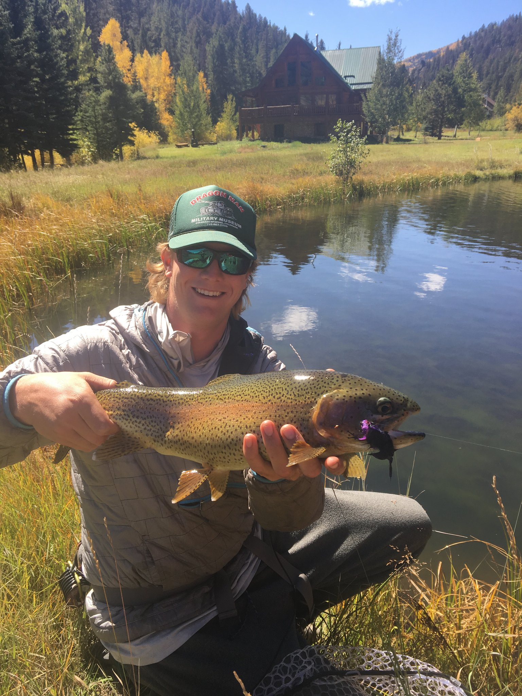
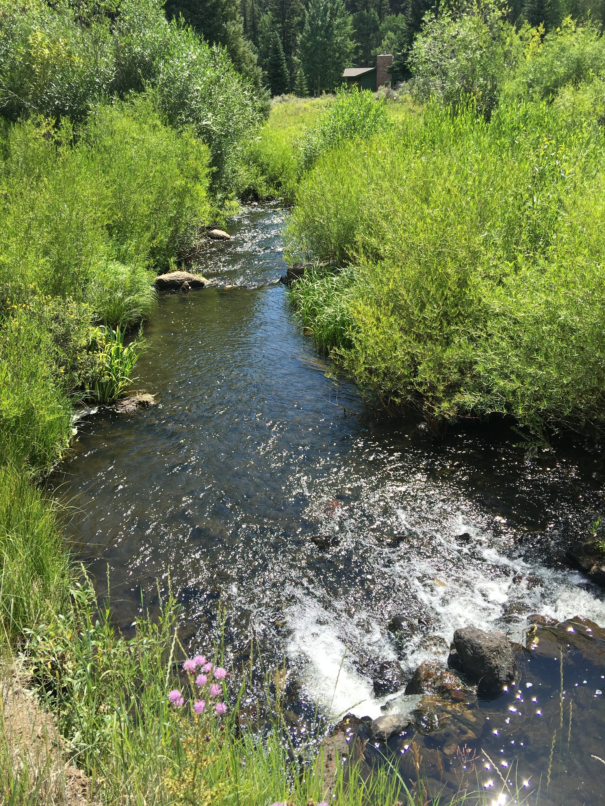

Stillwater basics: depth, structure, and patience
Our waters reward the classics—clean presentations, controlled depth, and thoughtful retrieves. Early and late are often prime; mid-day can still produce with the right approach.
Private Fly Fishing • Arkansas Headwaters
Silver Creek Lakes Club offers private fly fishing in the headwaters of the Arkansas River Valley. Fish a unique network of 3 lakes, 10 ponds, and the shallow stream connections between them.
Located in Saguache County, Colorado, Silver Creek Lakes Club is a private property in the Arkansas River Valley headwaters. The fishing spans a series of lakes and ponds—plus a shallow connecting stream that fishes beautifully at the right times of year.
Membership is available only through owning land or a home. Guests are welcome when accompanied by members, with options for independent fishing or guided days on the property.
3 lakes • 10 ponds • connecting stream sections
Private membership; guests permitted with members
Stillwater tactics, stream connections, and seasonal strategy
If you want to shorten the learning curve—depth control, retrieves, structure, and seasonality—our guides can help you make the most of your day.


A simple journal-style snapshot of conditions, tactics, and what’s working.
Our waters reward the classics—clean presentations, controlled depth, and thoughtful retrieves. Early and late are often prime; mid-day can still produce with the right approach.
The shallow stream sections can fish incredibly well during windows of movement and feeding. We’ll help you read flows, seams, and depth to find the opportunities.
Layers and wind protection matter. Bring waders, polarized glasses, and your confidence flies. If you’re booking a guided day, we’ll coordinate the details ahead of time.